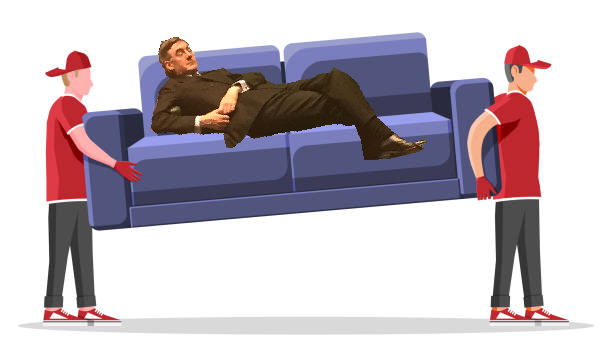

Make your very own fiscal black hole! 🧑🍳
Cooking
Politics
Economics
Money
Budget
Satire
Today at Rogue Analysis we’ll be looking at how to make your very own fiscal black hole! Usually this is a bit tricky to make at home because not everybody has access to a machine capable of spinning economic matters into incredibly dense journalism that no amount of nuance can escape from. Lets get to it! 🧑🍳

Ingredients
Right. Ingredients. What do we need? Well for starters, we need some reason that there’s a black hole to begin with. In this case, these are fiscal rules. Here are the latest set in season:
Fiscal policy decisions will be guided by updated fiscal rules, which require public sector net debt (excluding the Bank of England) to be falling as a percentage of GDP and public sector net borrowing to be below 3% of GDP by the fifth year of the rolling forecast.
Source: Policy paper Autumn Statement 2022 HTML
If we miss the fiscal rules, we get the black hole - bish bash bosh. The government have changed the fiscal rules a few times in the past decade without really providing a clear justification for what they’re targeting and why. But hey lets not think about that too much! RULES ARE RULES 😤 (even if the government comes up with them and then…gets rid of them…and then claims the new ones should bind policy…and then…never mind). More cooking, less thinking.
Now you might ask why does public sector net borrowing have to be below 3% of GDP and falling by the fifth year of the forecast?
Well are you NOT COMMITTED TO THE RESPONSIBLE MANAGEMENT OF PUBLIC FINANCES? 😤
…Oh you are? You’re just wondering where the figures come from, whether this is necessary right now, concerned about funding public services properly, and having the flexibility to respond to current macroeconomic conditions?
Well DO YOU NOT CARE ABOUT ANCHORING MARKET EXPECTATIONS? THEY’LL EAT US ALIVE. NO RULES? THE BAILIFFS WILL COME AND TAKE THE GOVERNMENT’S SOFA.

DID YOU NOT SEE WHAT HAPPENED WITH KWARTENG’S BUDGET? (which absolutely was not driven by a range of factors including uncertainty about unfunded cuts, the state of public services, and the inflationary environment). DO YOU WANT THAT? 😤
…Oh you weren’t saying no rules? And its probably helpful to communicate clearly to the markets? And the markets don’t care about your expectations? And the government in fact underlies the system of markets, is the only entity powerful enough to control them, and the illusion that the government are somehow impotent against the markets is an ideological fantasy designed to entrench the view that there is no alternative?
…Okay look. Just run with it. Also a bunch of other countries are doing this whole fiscal black hole thing and ratcheting up their fiscal rules. Apparently…my friend told me…my friend’s friend…called Heremy Junt.
Just…don’t ask too many questions. Stop trying to be clever. You’ll spoil this cooking blog for everyone.
What else what else. Okay we need a few more ingredients for the fiscal black hole. These are:
The effective interest rate on the national debt
The GDP growth rate
And the crucial special ingredient - the density of the media coverage 🙃
Now this won’t be the full thing because the Rogue Analysis cooking blog budget doesn’t stretch to incorporating the dynamics of multi-year trends, stock-flow adjustments, and what have you. Sadly we also lack the budget for numbers attached to the black hole. Because citing a number without any context usually really helps, right? Apologies 😞. Even so, we can make something resembling the fiscal black hole with these three ingredients and the fiscal rules!
Method
Ah. There’s a bit more trouble. I forget what the amount of each ingredient is meant to be. The chefs in the government are famous for knowing what the exact proportions are and forecasting with absolute certainty. I guess you’ll just have to eyeball it?
Here’s one I made earlier1:
So there you have it. A fiscal black hole. Make sure to garnish with spending cuts and tax increases. Don’t worry too much about the distribution of the tax increases - it adds spice! Bon appétit.
Tune in next time, where we’ll be making an Eton mess of the economy!
Okay but for real
WARNING
Satire ends here 🙃
The fiscal black hole discourse was/is terrible, and the Autumn Statement whilst bad, could have been a lot worse. Here are a few sources that helped me follow what was going on:
Calvert Jump, Rob and Michell, Jo (2022), The Dangerous Fiction of the ‘Fiscal Black Hole’, London: Progressive Economy Forum - also covered in this BBC article
Also recommend following Arun Advani, Carys Roberts, Frances Coppola, George Dibb, and James Meadway on twitter (as long as its about)/mastodon respectively. Its been interesting to see discussions unfold on those networks.
This blog post was fueled by spite for this piece in the financial times. You might be forgiven for thinking it was satire…
Footnotes
Full credits for code https://observablehq.com/@tomlarkworthy/wormhole - Tom Larkworthy↩︎